Home
Categories
Dictionary
Download
Project Details
Changes Log
What Links Here
How To
Syntax
FAQ
License
Editor edition mode
1 Toolbar
2 Editing content
2.1 Articles and dictionary description
2.2 Categories description
2.2.1 Adding elements in the content
2.3 Footer and header files
2.4 Other XML elements
3 See also
2 Editing content
2.1 Articles and dictionary description
2.2 Categories description
2.2.1 Adding elements in the content
2.3 Footer and header files
2.4 Other XML elements
3 See also
The right panel of the Editor window shows the content of the currently selected element in the tree.
The toolbar offer initially the following buttons:
In the edition mode, the content shows an XML editor of the article:
The toolbar offer the following buttons:
The menu allows to cut, copy, or paste content, and also add elements in the articles, dictionary description or categories description:
The popup menu allows to add elements in the content. For example in the following example the user selects the
A specific menu for putting the text in bold will appear:
After clicking the "Yes" button, the text will put the
Each element has a specific menu, for example here is the menu for the font element:
The list of elements to add is limited compared to the articles list:
For example for a package you will have the following menu:
The toolbar offer initially the following buttons:
-
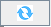
: The Refresh button allows to refresh the current content by parsing again the article -
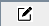
: The Edit button allows to enter in an XML edition mode of the article
In the edition mode, the content shows an XML editor of the article:
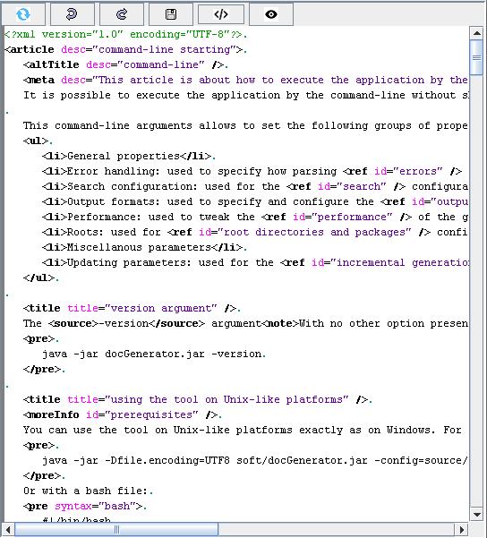
Toolbar
The toolbar has the following buttons: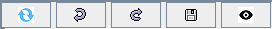
The toolbar offer the following buttons:
- : The Refresh button allows to refresh the current content by parsing again the element
-
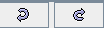
: The Undo and Redo buttons allows to undo or redo the edition of the current element -
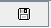
: The Save button allows to save the content of the element on the File system. This will trigger a parsing of the file on the disk, and eventually will present errors detected during the parsing. If the content of the element has been modified, the icon color will change: . Note that the CTRL+S key typed also triggers a save of the element. -
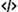
: The format button allows to format the XML content of Editor XML elements. The indentation for the formatted XML file is defined by the XML formatting Editor option -
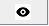
: The View button allows to exit the edition mode an enter again the html presentation of the article
Editing content
When in editing mode, you can edit the XML content in the editor. The menu will be different for the different kinds of Editor XML elements:- The Packages
- The Resource definition files
- The Image definition files
- The menus files
- The footer and header files
- The articles
- The dictionary description
- The categories description
- The Infobox definition files
Articles and dictionary description
The menu allows to cut, copy, or paste content, and also add elements in the articles, dictionary description or categories description.- If you did not select some content, you will have this menu:
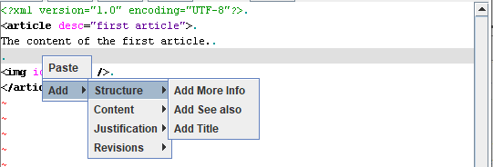
- If you did not select part of the content, you will have this menu:
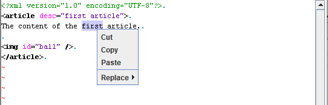
Categories description
Main Article: Categories description
The menu allows to cut, copy, or paste content, and also add elements in the articles, dictionary description or categories description:
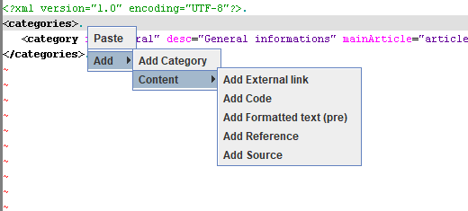
Adding elements in the content
Main Article: article popup menu elements list
The popup menu allows to add elements in the content. For example in the following example the user selects the
first text and selects the menu to put the text in bold: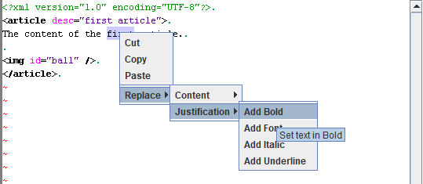
A specific menu for putting the text in bold will appear:
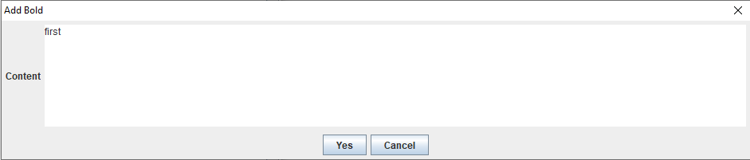
After clicking the "Yes" button, the text will put the
first text in bold: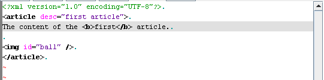
Each element has a specific menu, for example here is the menu for the font element:
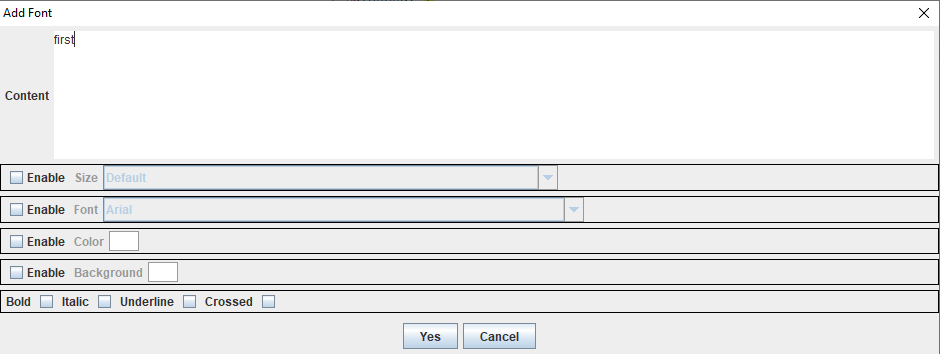
Footer and header files
As for the articles the menu allows to cut, copy, or paste content, and also add elements.The list of elements to add is limited compared to the articles list:
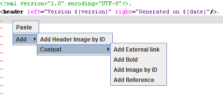
Other XML elements
Other XML elements are:- The Packages
- The Resource definition files
- The Image definition files
- The menus files
- The Infobox definition files
For example for a package you will have the following menu:
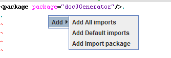
See also
- DocGenerator editor: This article explains the DocGenerator editor
- Editor window: This article explains the content of the Editor window
- Editor content panel: This article is about the right panel of the Editor which shows the content of the currently selected element in the tree
×

Categories: Editor | Gui